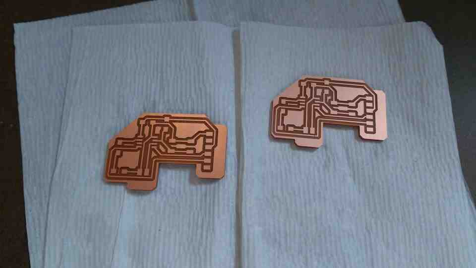
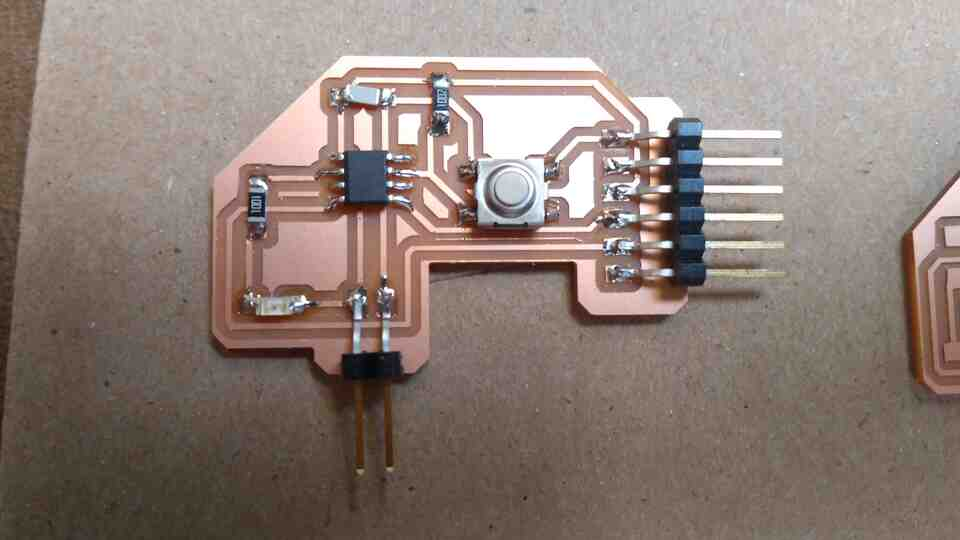

My first goal was to just redesign the layout for Neil's existing hello.t412.echo board
Using attiny 412 microcontroller and Neil's design as a guide:
- I created schematics in Kicad,
- matched them to the footprints from fab library,
-
Some people had problems installing the default footprint libraries that are necessary for a VCC footprint. I have managed to isolate the default libraries and uploaded them to this directory for troubleshooting. I'll keep this link up for a week. If you need it after that, just contact me.
- exported NET file to the footprint editor,
- routed each component,
- and created a border polyline for outline cuttling.
- If you press alt-3 Kicad provides a cool 3d model view.
- Kicad can export SVG files which need some tweaking in Inkscape before sending to mods for cutting.
- Remember to invert SVG in mods (this is tedious in Inkscape).
- In the first outline cut, the Roland SRM20 had a blinking failure and we had to restart it. Following the restart, despite checking the origin values in Mods, the origin was offset by almost 1cm.
- The next cut was fine with minor variation in quality between Ganit, Kim, and I (with the same settings and endmill, probably due to a non-flat bed).
- Jake shared some insight on the oscilloscope, which may come in handy once we program our boards.
- One extra useful thing is the voltage source next to the oscilloscope.
When the PCB was done, I went for the new design, which I would also solder.
- Initial iterations for the button & LED
- First cuts were eventless, so I went directly to soldering components and shimming.


On Kicad, I tried to mimic Neil's layout for hello.D11C.echo.

- On Kicad, with the recitation settings (0.5mm cut and margin), it was not possible to fit 3 lines between the microcontroller legs, let alone 4. And lowering the margins was not a great idea.
- Upon examining, and measuring Neil's PNG at Photoshop (with the right DPI), I figured he had 0.4mm tracks and gaps. Having 4 lanes in between the microcontroller legs was not possible with the footprints in the fab Kicad library.
- I created a custom footprint file for the D11C (link at bottom), that allows fitting 4 lanes under the chip.
Here are some of the failures from this week:
And the finished board with components and goofy fixes, because I forgot to trace one connection in Kicad.
On the dawn of the fifth day, we (I mean Laura) have finally managed to get both D11C's programmed. Boards need a bootloader pushed via EDBG, and programs sent via Arduino IDE. However, many things can, and did go wrong during the process.
Now both DC11's echo. However, one of them only works with the 2x5 connector tied to the programmer.
Special thanks to Laura, Harrison, Zach, Jake, and Anthony for putting up with our endless questions and issues through this rough yet fun week.
{kind=link}